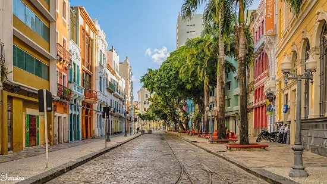
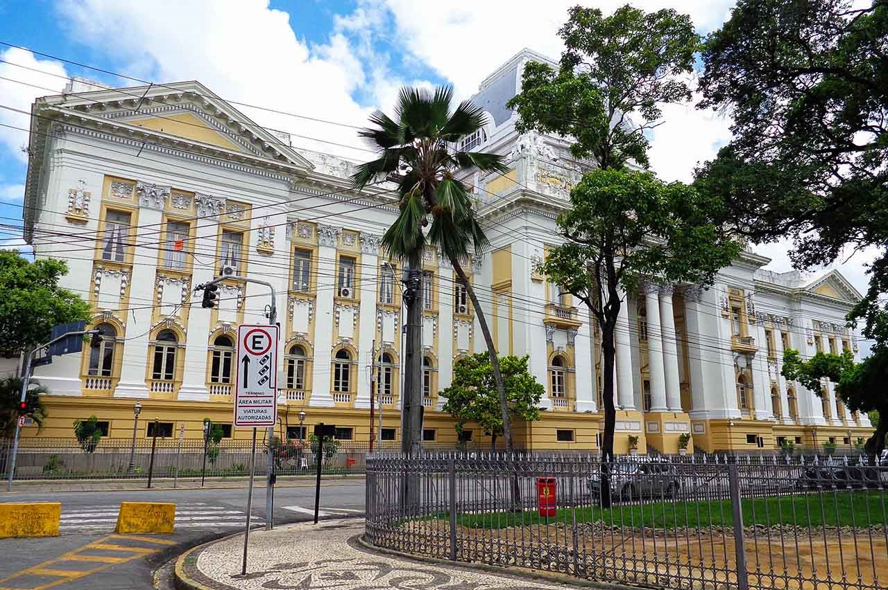
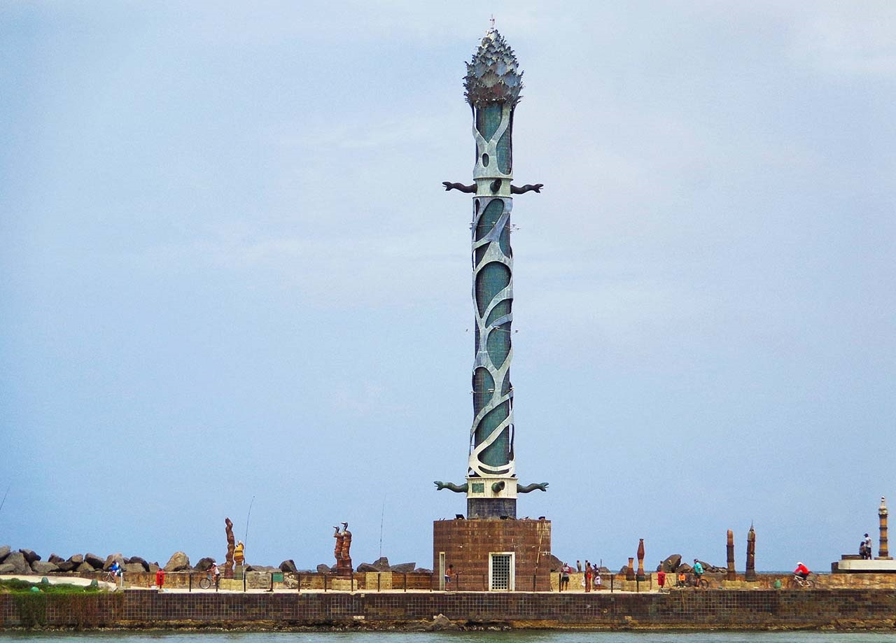

Confira a seguir alguns pontos turísticos da Cidade de Recife
Recife Antigo
O centro histórico da cidade é conhecido como Recife Antigo. Possui um grande número de construções do período colonial, belos prédios históricos, igrejas, museus e pontes, com destaque para a Mauricio de Nassau, além de marcos importantes.
O local possui uma boa conservação de seu patrimônio e a melhor maneira de conhecer é andar a pé. Comece pela Rua do Bom Jesus, depois siga para o Observatório Cultural Torre Malakoff, que descortina uma das mais bonitas vistas da cidade.
Praça da República
Localizada na Ilha de Antônio Vaz, entre os rios Capibaribe e Beberibe, a Praça da República é uma das mais importantes de Recife.
Na Praça da República estão edificados: O Palácio do Campo das Princesas (sede do governo estadual); O Teatro de Santa Isabel; O Palácio da Justiça e o Liceu de Artes e Ofícios de Pernambuco.
Há também vários monumentos na praça e entre as muitas árvores, destaca-se o centenário baobá.
Parque das Esculturas
Este parque exibe uma exposição permanente de 90 esculturas de cerâmica assinadas pelo artista plástico pernambucano Francisco Brennand.
Construído sobre um recife, em frente ao Marco Zero, tem como obra principal, a Coluna de Cristal com 32 metros de altura, confeccionada em argila e bronze e inspirada em uma flor descoberta por Burle Marx. Do Marco Zero partem barquinhos que atravessam ao rio até o parque.